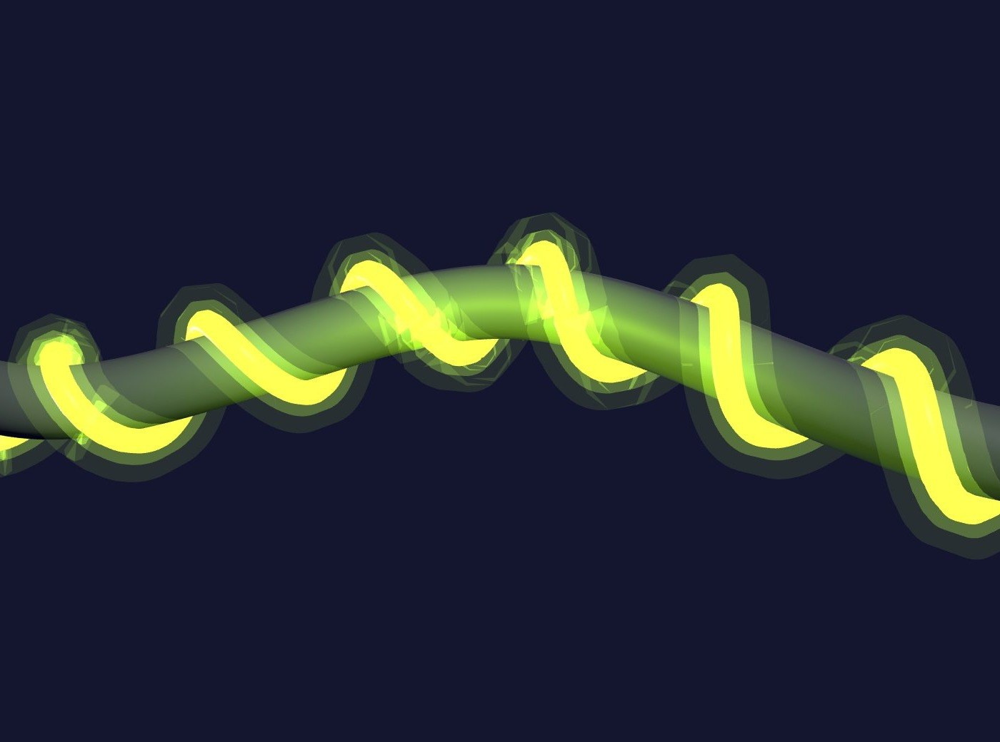
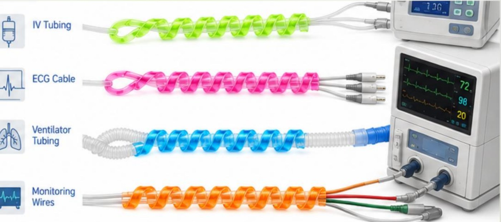

GlowLine wraps slide over your hospital's existing lines so nurses can identify them instantly — without turning on a light.
That leaves staff with a difficult choice overnight: turn on the lights and disrupt patient sleep and recovery, or work in the dark and risk misidentifying a critical line during an emergency. Existing options — flashlights, neon tape, ambient night-lights — don't solve the underlying problem.
Overhead lighting is the default workaround, but it disrupts patients trying to rest and recover.
Interrupted sleep cycles are directly linked to slower patient recovery times.
Every extra second spent identifying the correct line in an emergency matters.
Absorbs ambient light during the day and glows steadily through a full overnight shift.
A single wrap size fits IV lines, ECG cables, ventilator tubing, and monitoring wires alike.
Color- and texture-coded wraps help stop line mix-ups before they happen.
Nurses confirm the right line by sight or touch in seconds, even under pressure.
GlowLine's spiral silicone wraps slide over your hospital's existing wires and tubing — no new equipment to buy, no extra training required.

| Feature | GlowLine | Lightengale | Flashlights | Neon Tape |
|---|---|---|---|---|
| Safe for clinical use | ✓ | ✓ | ✕ | ✕ |
| Durable | ✓ | ✕ | ✓ | ✕ |
| Versatile across line types | ✓ | ✕ | ✕ | ✕ |
"I agree that we do have to turn on the lights, and there is not an existing solution for that."
— Shannon Buckner, Healthcare Professional
"They usually use flashlights, or turn on the lights, because no other solution exists."
— Heith Robertson, CRNA
Tell us about your hospital and how many rooms you'd like to outfit — we'll follow up with a tailored quote.
Request a Quote